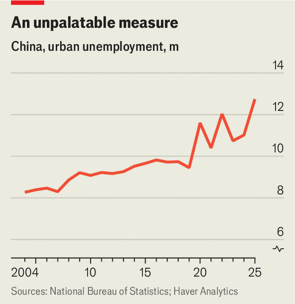

However you measure it, China’s job market is weak
Some workers are going back to the farm
Aug 20th 2026
STEERING AN economy has never been easy. In a candid presentation in 1975 Charles Goodhart, then of the Bank of England, shared some of Britain’s “unhappy” experiences after sterling lost its link to the dollar four years before. Instead of defending an exchange rate, the bank had hoped to use interest rates to control the supply of money, variously measured. But the monetary authorities had ignored what the presenter playfully called Goodhart’s law: “Any observed statistical regularity will tend to collapse once pressure is placed upon it for control purposes.”
Others have put this more snappily: when a measure becomes a target, it ceases to be a good measure. The law poses particular difficulties for China, which has many economic targets and thus few good measures. In 2018, for example, it began publishing a new monthly gauge of urban unemployment, based, like similar statistics elsewhere, on surveys of the population. But unlike other countries’ figures, China’s measure has remained remarkably stable. July’s rate of 5.2%, published on August 17th, was typical. It was less than 6% but at least 5% for the 99th time in the past 115 months. Even during the covid-19 pandemic, when American unemployment climbed well into double digits, China’s measure never exceeded 6.2%.
One reason may be that the survey covers only urban workers. The flow of migrants into and out of China’s cities gives the urban labour market a homoeostatic quality. When job creation is strong and the unemployment rate is set to fall, more of them turn up, expanding the denominator. Conversely, when the labour market is weak, the jobless seek work in the countryside, dropping out of the survey.
There may be a second reason for the measure’s stasis: the pressure placed on it for control purposes. Since 2018 the government has set an annual target for surveyed urban unemployment, usually around 5.5%, rising to 6% in 2020. That gives officials an incentive to keep the rate around that figure, by hook or by crook. A “possibility, which cannot be proved but is difficult to dismiss, is that the surveyed unemployment rate is being managed in some fashion to reduce volatility”, argues Andrew Batson of Gavekal Dragonomics, a consultancy, in a recent note.
The stability of the unemployment rate is thus a false comfort. It makes it needlessly difficult to interpret the biggest job market in the world. Some economists suspect that China’s export boom is not generating equally strong manufacturing employment. Others think artificial intelligence may be killing some entry-level white-collar jobs. Another worry is that wage growth is not strong enough to stop the economy falling back into deflation. All these suspicions would be easier to verify or dismiss if China’s unemployment figures were as fluid as its economy.

Instead, economists must rely on a variety of more or less unsatisfactory proxies. Mr Batson has spotted a new one—or rather, a revived one. He advises looking again at an older gauge, which the modern survey-based figure was supposed to supersede. This measure, which has been collected since 1978, counts only those who have registered as unemployed with local authorities, a first step towards applying for jobless benefits. For decades, this was also a government target, and also uncannily stable. With the arrival of surveyed unemployment, it fell into obscurity. The government stopped targeting it and even stopped releasing the percentage rate. But once a year the raw number of people registered as unemployed still appears in the official database, albeit with a substantial lag. The number jumped at the end of 2025 to 12.7m, an increase of almost 16% from the year before (see chart).
That total must be interpreted with care. Rule changes in 2020, just before the pandemic struck, made it easier to register, especially for people living far from their place of birth. But no tweaks in the rules explain the more recent increase in registrations, argues Mr Batson. The rise would instead seem to represent “real stress in the labour market”.
If so, then this uncharacteristic jump in a once inert statistic may also illustrate a deeper principle. “When a measure ceases to be a target,” Mr Batson suggests, “it becomes a good measure again.” Call it Batson’s corollary to Goodhart’s law. If the registered unemployment number attracts too much fresh attention, of course, the government may stop updating it. It has form. When youth-unemployment figures became a lightning rod for criticism in 2023, the government solved the problem by suspending them. Tracking China’s economy has never been easy. When a measure becomes a target, it ceases to be a good measure. And when a measure becomes too embarrassing, it ceases to be. ■